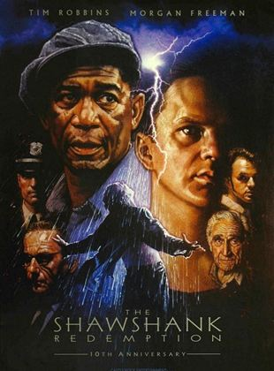
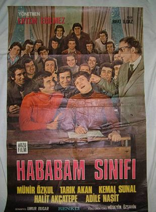

|  |
Esaretin BedeliEsaretin Bedeli, Andy ve Red isimli iki mahkumun parmaklıklar ardında kurdukları dünyanın hikayesini anlatıyor. Andy Dufresne, genç ve başarılı bir bankerdir. Karısını ve karısının sevgilisini öldürmek suçundan yargılanır ve ömür boyu hapis cezası alır. Shawsank Hapishanesi'nde dayak, işkence, tecavüz, her türlü durum yaşanmaktadır fakat Andy gene de hayata bağlı ve iyimserdir. Bu tutumu etrafındakileri de etkiler. Andy umutlu bakış açısıyla çevresindeki tüm mahkumları, parmaklıklar arkasında bile özgür bir yaşam olabileceğine inandırır. Andy'nin bu çabalarına ortak olacak bir arkadaşı da olacaktır: Red.Bir Stephen King uyarlaması olan filmde Morgan Freeman ve Tim Robbins başrolde. Film, 1995'te, aralarında en iyi film adaylığı da olmak üzere tam 7 dalda Oscar'a aday göste |
|  |
Hababam SınıfıÖğrencilik hayatları haylazlık ve tembellik üzerine kurulu olan bir sınıf dolusu matrak öğrencinin, Özel Çamlıca Lisesi’nde yaşadığı yer yer eğlenceli, yer yer de dokunaklı öyküleri anlatan film, Hababam Sınıfı serisinin ilk filmidir. Keskin zekaları sayesinde tüm öğretmenlerini avuçlarında oynatıp okul düzeni ve eğitim sistemini alaşağı eden bu birbirinden renkli karakterdeki öğrenciler hem okulun hem de sinemamızın en yaramaz sınıfı olma özelliğinde. Ancak bu hükümdarlık okula atanan yeni müdür muavinin gelişiyle sarsıldığında, Hababam Sınıfı daha önce hiç karşılaşmadığı türden bir disiplin anlayışına ve zekaya sahip olan Mahmut Hoca tarafından unutulmaz derslere tabi tutulur. Hababam Sınıfı serisinin ilk filmi olan bu yapıt Rıfat Ilgaz'ın ölümsüz eseri Hababam Sınıfı romanından uyarlanmıştı. |

|
BabaBaba, 40’lar ve 50’lerin Amerika’sında, bir İtalyan mafya ailesinin destansı öyküsünü konu alıyor. Don Corleone’nin kızı Connie’nin düğününde, ailenin en küçük oğlu ve bir savaş gazisi olan Michael babasıyla barışır. Bir suikast girişimi, Don’u artık işleri yönetemeyecek duruma düşürünce, ailenin başına Michael ve ağabeyi Sonny geçer. Danışmanları Tom Hagen’in de yardımlarıyla diğer ailelere savaş açan Corleone ailesi, eski moda yöntemleri de değiştirmeye başlar. |